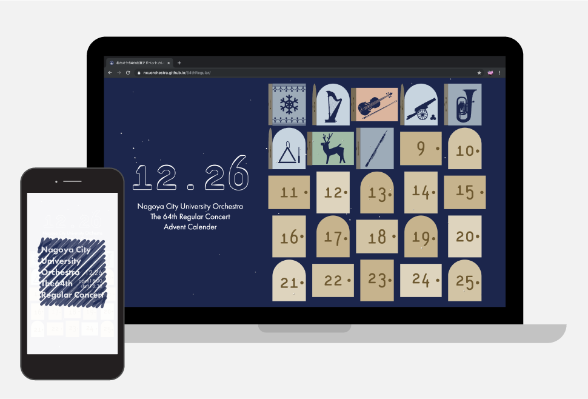

GotoAyaka's
PORTFOLIO

曲についての話を紹介するサイト
名市オケ64th定演アドベントカレンダー
制作期間
2019.11-2019.12
担当範囲
すべて（企画、デザイン、コーディング）
使用言語・ツール
HTML / CSS / JavaScript / jQuery / Illustrator / Photoshop
制作背景
自分の所属する管弦楽団の定期演奏会のために、他の近隣の大学の管弦楽団がやってないような、何か変わった企画をしたいと思い作りました。
東海地方の管弦楽団の中では12月は毎週どこかの大学が演奏会を開催する演奏会ラッシュで、その中でも自分の管弦楽団はそのラッシュの最後の方で印象が薄くなりがちだと私は感じていました。大学の管弦楽団の演奏会の客層としては「家族・友人」「近隣の同じオーケストラをやっている学生」がメインになるのですが、「家族・友人」は誘った本人と関係が近いのもあって誘われたら急用ができない限り演奏会に来てくれますが、「近隣の同じオーケストラをやっている学生」にとっては毎週行われる演奏会の１つで、必ず来てくれるとは限りません。
そこで「近隣の同じオーケストラをやっている学生」にしつこい印象は与えずに毎日アピールすべく、定期演奏会で演奏する曲に関係する話が毎日1つずつ読めるアドベントカレンダーを作りました。
見た目はすでに完成していた演奏会のポスターに合わせたデザインを意識しつつ、カレンダー部分の扉にアニメーションをつけて今日の日付のところは少しだけ開いたり閉じたりするようにし、記事を読むときには扉が開くようにして実際のアドベントカレンダーを開けるときに近い動きになるようにしています。また、記事を読むページにはツイッターやラインの共有ボタンを設置して、共有しやすくしました。
また、ツイッターで拡散する際に「見てください」などといったお願いする形で拡散されるよりも、「すごい！」「なにこれ！」といった感動や驚きのコメントとともに拡散された方が見る側によりインパクトを与えられると考え、公開するまでは自分と幹部の数人、ツイッターの運営を行なっている団員のみで進めていきました。
このアドベントカレンダーを公開したことにより、楽団のフォロワーの増加数が通常時の2.5倍になりました。また、ツイッター運営係の負担を最小限でツイート数を増やしたことで、12月のツイート閲覧数とプロフィールへのアクセス数が4倍に伸びました。
他にもこの企画を実施したことで、団員内で演奏会に対する宣伝意識が上がりより積極的にチケットを配ったり、個人的にSNSで呼びかける人が増え、その他会場の立地の良さや曲の人気度も相まって演奏会の来場者数が目標であった1000人を超えることができました。
←